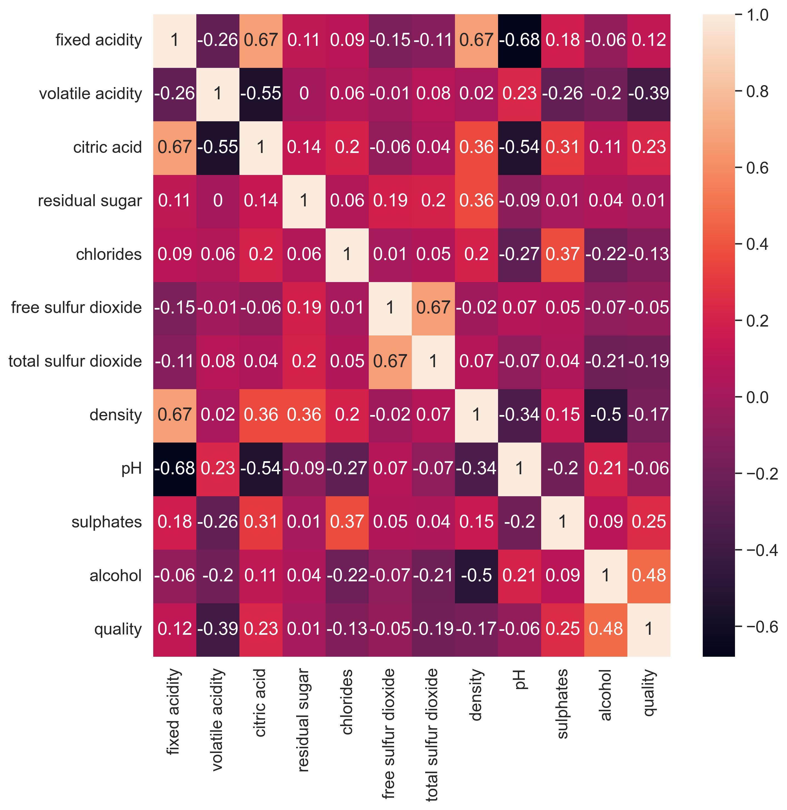

# Loading the necessary packages
import random
from seaborn.palettes import color_palette
random.seed(9001)
import matplotlib.pyplot as plt
import seaborn as sns
import numpy as np
import pandas as pd
from sklearn.ensemble import RandomForestClassifier
from sklearn.svm import SVC
from sklearn.linear_model import SGDClassifier
from sklearn.metrics import confusion_matrix, classification_report
from sklearn.preprocessing import StandardScaler, LabelEncoder
from sklearn.model_selection import train_test_split, GridSearchCV, cross_val_score
%matplotlib inline
# Load the dataset
gr8_wq= pd.read_csv("dataset/winequality-red.csv",header=0)Red Wine Quality Prediction Model
Team 8 - Jiazu Zhang - jz944
Team 8 - Mengjia Wei - mw1296
Team 8 - Ahmed Khair - afk46
3. Analysis of the dataset and Trained Model
3.1 Load dataset and packages
3.2 Show first rows of dataset and describe the dataframe
# Show first 10 rows of the dataframe
gr8_wq.head(11)| fixed acidity | volatile acidity | citric acid | residual sugar | chlorides | free sulfur dioxide | total sulfur dioxide | density | pH | sulphates | alcohol | quality | |
|---|---|---|---|---|---|---|---|---|---|---|---|---|
| 0 | 7.4 | 0.70 | 0.00 | 1.9 | 0.076 | 11.0 | 34.0 | 0.9978 | 3.51 | 0.56 | 9.4 | 5 |
| 1 | 7.8 | 0.88 | 0.00 | 2.6 | 0.098 | 25.0 | 67.0 | 0.9968 | 3.20 | 0.68 | 9.8 | 5 |
| 2 | 7.8 | 0.76 | 0.04 | 2.3 | 0.092 | 15.0 | 54.0 | 0.9970 | 3.26 | 0.65 | 9.8 | 5 |
| 3 | 11.2 | 0.28 | 0.56 | 1.9 | 0.075 | 17.0 | 60.0 | 0.9980 | 3.16 | 0.58 | 9.8 | 6 |
| 4 | 7.4 | 0.70 | 0.00 | 1.9 | 0.076 | 11.0 | 34.0 | 0.9978 | 3.51 | 0.56 | 9.4 | 5 |
| 5 | 7.4 | 0.66 | 0.00 | 1.8 | 0.075 | 13.0 | 40.0 | 0.9978 | 3.51 | 0.56 | 9.4 | 5 |
| 6 | 7.9 | 0.60 | 0.06 | 1.6 | 0.069 | 15.0 | 59.0 | 0.9964 | 3.30 | 0.46 | 9.4 | 5 |
| 7 | 7.3 | 0.65 | 0.00 | 1.2 | 0.065 | 15.0 | 21.0 | 0.9946 | 3.39 | 0.47 | 10.0 | 7 |
| 8 | 7.8 | 0.58 | 0.02 | 2.0 | 0.073 | 9.0 | 18.0 | 0.9968 | 3.36 | 0.57 | 9.5 | 7 |
| 9 | 7.5 | 0.50 | 0.36 | 6.1 | 0.071 | 17.0 | 102.0 | 0.9978 | 3.35 | 0.80 | 10.5 | 5 |
| 10 | 6.7 | 0.58 | 0.08 | 1.8 | 0.097 | 15.0 | 65.0 | 0.9959 | 3.28 | 0.54 | 9.2 | 5 |
# Describe dataset
gr8_wq.describe()| fixed acidity | volatile acidity | citric acid | residual sugar | chlorides | free sulfur dioxide | total sulfur dioxide | density | pH | sulphates | alcohol | quality | |
|---|---|---|---|---|---|---|---|---|---|---|---|---|
| count | 1599.000000 | 1599.000000 | 1599.000000 | 1599.000000 | 1599.000000 | 1599.000000 | 1599.000000 | 1599.000000 | 1599.000000 | 1599.000000 | 1599.000000 | 1599.000000 |
| mean | 8.319637 | 0.527821 | 0.270976 | 2.538806 | 0.087467 | 15.874922 | 46.467792 | 0.996747 | 3.311113 | 0.658149 | 10.422983 | 5.636023 |
| std | 1.741096 | 0.179060 | 0.194801 | 1.409928 | 0.047065 | 10.460157 | 32.895324 | 0.001887 | 0.154386 | 0.169507 | 1.065668 | 0.807569 |
| min | 4.600000 | 0.120000 | 0.000000 | 0.900000 | 0.012000 | 1.000000 | 6.000000 | 0.990070 | 2.740000 | 0.330000 | 8.400000 | 3.000000 |
| 25% | 7.100000 | 0.390000 | 0.090000 | 1.900000 | 0.070000 | 7.000000 | 22.000000 | 0.995600 | 3.210000 | 0.550000 | 9.500000 | 5.000000 |
| 50% | 7.900000 | 0.520000 | 0.260000 | 2.200000 | 0.079000 | 14.000000 | 38.000000 | 0.996750 | 3.310000 | 0.620000 | 10.200000 | 6.000000 |
| 75% | 9.200000 | 0.640000 | 0.420000 | 2.600000 | 0.090000 | 21.000000 | 62.000000 | 0.997835 | 3.400000 | 0.730000 | 11.100000 | 6.000000 |
| max | 15.900000 | 1.580000 | 1.000000 | 15.500000 | 0.611000 | 72.000000 | 289.000000 | 1.003690 | 4.010000 | 2.000000 | 14.900000 | 8.000000 |
3.3 Create pairplot for whole dataset to observe the distributions and correlations
# create pairplot by quality
pp = sns.pairplot(gr8_wq, hue="quality",diag_kind="hist")
pp.fig.suptitle("Pairplot", fontsize=30, y=1.02);3.4 Show correlations of wine features and wine quality scores
# plot correltion heatmap
plt.figure(figsize=(18,13))
plt.title("Correlation - wine features vs. wine quality scores", fontsize=25, pad=20)
sns.set(font_scale=1.3)
corr = sns.heatmap(gr8_wq.corr(), annot=True, fmt='.2f', linewidths=2, cmap="crest")
corr.set_yticklabels(corr.get_ymajorticklabels(), fontsize = 16);
corr.set_xticklabels(corr.get_xmajorticklabels(), fontsize = 16, rotation=45);The correlation heatmap above shows that “Alcohol”, “Sulphates”, “Citric acid” these three features have high positive correlations with “Wine quality score”; “Volatile acidity”, “Total sulfur dioxide” have the high negative correlation with “Wine quality score”.
3.5 Graph distributions of wine features (“Alcohol”, “Sulphates”, “Citric acid”,“Volatile acidity”, “Total sulfur dioxide”,“Chlorides”) by wine quality scores
# Wine features distribution plots by wine quality score using Kernel density estimation (KDE)
fig, axes = plt.subplots(2, 3, figsize=(20,13))
fig.suptitle('Wine features density distributions by wine quality scores',fontsize=25, y=1.02)
sns.kdeplot(ax=axes[0, 0], data=gr8_wq, x="alcohol", hue="quality", fill=True, palette='gist_earth');
sns.kdeplot(ax=axes[0, 1], data=gr8_wq, x="sulphates", hue="quality", fill=True, palette='gist_earth');
sns.kdeplot(ax=axes[0, 2], data=gr8_wq, x="citric acid", hue="quality", fill=True, palette='gist_earth');
sns.kdeplot(ax=axes[1, 0], data=gr8_wq, x="volatile acidity", hue="quality", fill=True, palette='gist_earth');
sns.kdeplot(ax=axes[1, 1], data=gr8_wq, x="total sulfur dioxide", hue="quality", fill=True, palette='gist_earth');
sns.kdeplot(ax=axes[1, 2], data=gr8_wq, x="chlorides", hue="quality", fill=True, palette='gist_earth');
The distribution plots of above features reflect the same result as correlation heatmap: high quality wines have higher probability to have high level of Alcohol, Sulphates, Citric acid and Volatile acidity; low level of Total Sulfure dioxide. While low quality wines are in the opposite.
note that 2 = high quality, 1 = medium quality, 0 = low quality
# Convert "Quality" into Low/Medium/High
gr8_wq['quality_cat'] = np.select([gr8_wq.quality >=7, gr8_wq.quality>=5 , gr8_wq.quality< 5],
[2,1,0],
default=None)
gr8_wq['quality_cat'] = gr8_wq['quality_cat'].astype('category',copy=False)gr8_wq.head(10)| fixed acidity | volatile acidity | citric acid | residual sugar | chlorides | free sulfur dioxide | total sulfur dioxide | density | pH | sulphates | alcohol | quality | quality_cat | |
|---|---|---|---|---|---|---|---|---|---|---|---|---|---|
| 0 | 7.4 | 0.70 | 0.00 | 1.9 | 0.076 | 11.0 | 34.0 | 0.9978 | 3.51 | 0.56 | 9.4 | 5 | 1 |
| 1 | 7.8 | 0.88 | 0.00 | 2.6 | 0.098 | 25.0 | 67.0 | 0.9968 | 3.20 | 0.68 | 9.8 | 5 | 1 |
| 2 | 7.8 | 0.76 | 0.04 | 2.3 | 0.092 | 15.0 | 54.0 | 0.9970 | 3.26 | 0.65 | 9.8 | 5 | 1 |
| 3 | 11.2 | 0.28 | 0.56 | 1.9 | 0.075 | 17.0 | 60.0 | 0.9980 | 3.16 | 0.58 | 9.8 | 6 | 1 |
| 4 | 7.4 | 0.70 | 0.00 | 1.9 | 0.076 | 11.0 | 34.0 | 0.9978 | 3.51 | 0.56 | 9.4 | 5 | 1 |
| 5 | 7.4 | 0.66 | 0.00 | 1.8 | 0.075 | 13.0 | 40.0 | 0.9978 | 3.51 | 0.56 | 9.4 | 5 | 1 |
| 6 | 7.9 | 0.60 | 0.06 | 1.6 | 0.069 | 15.0 | 59.0 | 0.9964 | 3.30 | 0.46 | 9.4 | 5 | 1 |
| 7 | 7.3 | 0.65 | 0.00 | 1.2 | 0.065 | 15.0 | 21.0 | 0.9946 | 3.39 | 0.47 | 10.0 | 7 | 2 |
| 8 | 7.8 | 0.58 | 0.02 | 2.0 | 0.073 | 9.0 | 18.0 | 0.9968 | 3.36 | 0.57 | 9.5 | 7 | 2 |
| 9 | 7.5 | 0.50 | 0.36 | 6.1 | 0.071 | 17.0 | 102.0 | 0.9978 | 3.35 | 0.80 | 10.5 | 5 | 1 |
# # pairplot by quality category
# pp2 = sns.pairplot(gr8_wq, hue="quality_cat", diag_kind="hist")
# pp2.fig.suptitle("Pairplot", fontsize=30, y=1.02);# # Wine features distribution plots by wine quality cateogries using Kernel density estimation (KDE)
# fig2, axes2 = plt.subplots(2, 3, figsize=(20,13))
# fig2.suptitle('Wine features density distributions by wine quality category',fontsize=25, y=1.02)
# sns.kdeplot(ax=axes2[0, 0], data=gr8_wq, x="alcohol", hue="quality_cat", fill=True, palette='gist_earth');
# sns.kdeplot(ax=axes2[0, 1], data=gr8_wq, x="sulphates", hue="quality_cat", fill=True, palette='gist_earth');
# sns.kdeplot(ax=axes2[0, 2], data=gr8_wq, x="citric acid", hue="quality_cat", fill=True, palette='gist_earth');
# sns.kdeplot(ax=axes2[1, 0], data=gr8_wq, x="volatile acidity", hue="quality_cat", fill=True, palette='gist_earth');
# sns.kdeplot(ax=axes2[1, 1], data=gr8_wq, x="total sulfur dioxide", hue="quality_cat", fill=True, palette='gist_earth');
# sns.kdeplot(ax=axes2[1, 2], data=gr8_wq, x="chlorides", hue="quality_cat", fill=True, palette='gist_earth');
Second Section: Modeling
# Import libraries
import pandas as pd
import numpy as np
import matplotlib.pyplot as plt
import seaborn as sns
from sklearn.model_selection import cross_val_score
from sklearn.linear_model import LogisticRegression
from sklearn.neighbors import KNeighborsClassifier
from sklearn import svm
from sklearn.tree import DecisionTreeClassifier
from sklearn.ensemble import GradientBoostingClassifier, BaggingClassifier, RandomForestClassifier
from sklearn.naive_bayes import GaussianNB
from sklearn.model_selection import cross_val_score, RepeatedKFold
from sklearn.model_selection import train_test_split
from sklearn.model_selection import RepeatedKFold
from xgboost import XGBClassifier
import warnings
warnings.filterwarnings("ignore")Split the Dataset
split out target variable
gr8_X = gr8_wq.drop(['quality'], axis = 1)
gr8_y = gr8_wq['quality']
gr8_X| fixed acidity | volatile acidity | citric acid | residual sugar | chlorides | free sulfur dioxide | total sulfur dioxide | density | pH | sulphates | alcohol | |
|---|---|---|---|---|---|---|---|---|---|---|---|
| 0 | 7.4 | 0.700 | 0.00 | 1.9 | 0.076 | 11.0 | 34.0 | 0.99780 | 3.51 | 0.56 | 9.4 |
| 1 | 7.8 | 0.880 | 0.00 | 2.6 | 0.098 | 25.0 | 67.0 | 0.99680 | 3.20 | 0.68 | 9.8 |
| 2 | 7.8 | 0.760 | 0.04 | 2.3 | 0.092 | 15.0 | 54.0 | 0.99700 | 3.26 | 0.65 | 9.8 |
| 3 | 11.2 | 0.280 | 0.56 | 1.9 | 0.075 | 17.0 | 60.0 | 0.99800 | 3.16 | 0.58 | 9.8 |
| 4 | 7.4 | 0.700 | 0.00 | 1.9 | 0.076 | 11.0 | 34.0 | 0.99780 | 3.51 | 0.56 | 9.4 |
| ... | ... | ... | ... | ... | ... | ... | ... | ... | ... | ... | ... |
| 1594 | 6.2 | 0.600 | 0.08 | 2.0 | 0.090 | 32.0 | 44.0 | 0.99490 | 3.45 | 0.58 | 10.5 |
| 1595 | 5.9 | 0.550 | 0.10 | 2.2 | 0.062 | 39.0 | 51.0 | 0.99512 | 3.52 | 0.76 | 11.2 |
| 1596 | 6.3 | 0.510 | 0.13 | 2.3 | 0.076 | 29.0 | 40.0 | 0.99574 | 3.42 | 0.75 | 11.0 |
| 1597 | 5.9 | 0.645 | 0.12 | 2.0 | 0.075 | 32.0 | 44.0 | 0.99547 | 3.57 | 0.71 | 10.2 |
| 1598 | 6.0 | 0.310 | 0.47 | 3.6 | 0.067 | 18.0 | 42.0 | 0.99549 | 3.39 | 0.66 | 11.0 |
1599 rows × 11 columns
gr8_y0 5
1 5
2 5
3 6
4 5
..
1594 5
1595 6
1596 6
1597 5
1598 6
Name: quality, Length: 1599, dtype: int64split out train test dataset
gr8_X_train, gr8_X_test, gr8_y_train, gr8_y_test = train_test_split(gr8_X, gr8_y, stratify=gr8_y,test_size=0.20)Note: Due to the small amount of High quality and low quality (8 & 3), the train test split is performed with stratify split instead of random split to ensure there are samiliar percentage of those minor labels in the test dataset
Baseline model
Get the baseline model accuracy
Note: The baseline model we chose is logistic regression, no tuning performed
# Import Logistic Regression Model
from sklearn.linear_model import LogisticRegression
# Initializing the LogisticRegression Model
model = LogisticRegression()
# Training the model
model.fit(gr8_X_train, gr8_y_train)
# Making predictions on the datatest
gr8_y_pred = model.predict(gr8_X_test)
# Getting the score
LogisticRegression_score = model.score(gr8_X_test, gr8_y_test)
print("The accuracy is:", LogisticRegression_score)The accuracy is: 0.553125Model coefficient
coefficient = model.coef_coefficient_df = pd.DataFrame(coefficient, index = model.classes_, columns = gr8_X_train.columns)
coefficient_df.index.name = "quality"
coefficient_df| fixed acidity | volatile acidity | citric acid | residual sugar | chlorides | free sulfur dioxide | total sulfur dioxide | density | pH | sulphates | alcohol | |
|---|---|---|---|---|---|---|---|---|---|---|---|
| quality | |||||||||||
| 3 | 0.067942 | 0.073006 | -0.012764 | 0.061425 | 0.010225 | 0.075731 | -0.034026 | -0.006234 | -0.010061 | -0.020839 | -0.249801 |
| 4 | -0.228889 | 0.237313 | -0.126594 | 0.277913 | -0.011500 | -0.034861 | 0.003799 | 0.022120 | 0.170797 | -0.082843 | 0.026391 |
| 5 | 0.206450 | 0.943529 | -0.453357 | -0.099189 | 0.108902 | -0.006237 | 0.026014 | 0.467504 | 1.678355 | -0.353553 | -0.693206 |
| 6 | 0.118011 | -0.400165 | 0.083803 | -0.103738 | -0.018482 | 0.020496 | 0.005914 | -0.094054 | -0.369139 | 0.196136 | 0.216920 |
| 7 | 0.127973 | -0.768955 | 0.460696 | -0.065319 | -0.075128 | 0.026533 | -0.006653 | -0.339183 | -1.280072 | 0.221368 | 0.454996 |
| 8 | -0.291487 | -0.084729 | 0.048216 | -0.071092 | -0.014017 | -0.081662 | 0.004952 | -0.050154 | -0.189879 | 0.039732 | 0.244700 |
Coefficient visualization
plt.figure(figsize=(10, 10),dpi=300)
correlation_matrix = gr8_wq.corr().round(2)
sns.heatmap(data=correlation_matrix, annot=True)
#plt.savefig('/Users/Ahmed/Documents/Dsan6700/heatmap.jpg',dpi=300)
Evaluate base models
Test performance of base models
Note: Due to the new version of the XGBoost model’s issue, y_train must be encoded.
# #encode y_train
# from sklearn.preprocessing import LabelEncoder
# le = LabelEncoder()
# y_train = le.fit_transform(y_train)# list of models
def base_models():
models = dict()
models['lr'] = LogisticRegression()
models["KN"] = KNeighborsClassifier()
models["SVC"] = svm.SVC()
models["Tree"] = DecisionTreeClassifier()
models["Random Forest"] = RandomForestClassifier()
models["Bagging"] = BaggingClassifier()
models["GBM"] = GradientBoostingClassifier()
models["GNB"] = GaussianNB()
# models["XGB"] = XGBClassifier()
return models# Function to evaluate the list of models
def eval_models(model):
cv = RepeatedKFold(n_splits=10, n_repeats=3, random_state=1)
scores = -cross_val_score(model, gr8_X_train, gr8_y_train, scoring='neg_mean_absolute_error', cv=cv, n_jobs=-1, error_score='raise')
return scores# evaluate the models and print results
models = base_models()
results, names = list(), list()
for name, model in models.items():
scores = eval_models(model)
results.append(scores)
names.append(name)
print('>%s %.3f (%.3f)' % (name, scores.mean(), scores.std()))
# store results in dataframe
classmod = pd.DataFrame(np.transpose(results), columns = ["lr","KN","SVC","Tree","Random Forest","Bagging","GBM", "GNB"])
classmod = pd.melt(classmod.reset_index(), id_vars='index',value_vars=["lr","KN","SVC","Tree","Random Forest","Bagging","GBM", "GNB"])>lr 0.470 (0.052)
>KN 0.598 (0.057)
>SVC 0.559 (0.046)
>Tree 0.490 (0.059)
>Random Forest 0.363 (0.049)
>Bagging 0.407 (0.060)
>GBM 0.422 (0.047)
>GNB 0.565 (0.069)Visualize base models’ performance
import plotly.express as px
from plotly.subplots import make_subplots
import plotly.graph_objs as go
fig = px.box(classmod, x="variable", y="value",color="variable",points='all',
labels={"variable": "Machine Learning Model",
"value": "RMS Error"
},title="Model Performance")
fig.show()Unable to display output for mime type(s): application/vnd.plotly.v1+jsonBuild and apply Stack model base on the performance of base models
from sklearn.ensemble import GradientBoostingClassifier, BaggingClassifier,RandomForestClassifier, StackingClassifierSelect base models to stacking model
Note that the base models with best performance are Random Forest, Bagging and GBM
def get_stacking():
# define the base models
level0 = list()
level0.append(('Bagging', BaggingClassifier()))
level0.append(('RF', RandomForestClassifier()))
level0.append(('GBM', GradientBoostingClassifier()))
# define meta learner model
level1 = LogisticRegression()
# define the stacking ensemble
model = StackingClassifier(estimators=level0, final_estimator=level1, cv=5)
return model
def base_models():
models = dict()
models["Bagging"] = BaggingClassifier()
models["Random Forest"] = RandomForestClassifier()
models["GBM"] = GradientBoostingClassifier()
models["Stacked Model"] = get_stacking()
return modelsNew models evaluation
def eval_models(model):
cv = RepeatedKFold(n_splits=10, n_repeats=3, random_state=1)
scores = -cross_val_score(model, gr8_X_train, gr8_y_train,
scoring='neg_mean_absolute_error', cv=cv, n_jobs=-1,
error_score='raise')
return scores
models = base_models()
# evaluate the models and store results
results, names = list(), list()
for name, model in models.items():
scores = eval_models(model)
results.append(scores)
names.append(name)
print('>%s %.3f (%.3f)' % (name, scores.mean(), scores.std()))
classmod = pd.DataFrame(np.transpose(results), columns = ["Bagging","Random Forest","GBM","Stacked Model"])
classmod = pd.melt(classmod.reset_index(),
id_vars='index',value_vars=["Bagging","Random Forest","GBM","Stacked Model"])
fig = px.box(classmod, x="variable", y="value",color="variable",points='all',
labels={"variable": "Machine Learning Model","value": "RMS Error"},title="Model Performance")
fig.show()
# fig.write_image("Project/Boxplot-candidate.jpeg",engine="kaleido",format="png",width=1600, height=700, scale=0.75)fig.show()>Bagging 0.407 (0.053)
>Random Forest 0.356 (0.045)
>GBM 0.417 (0.048)
>Stacked Model 0.356 (0.042)Unable to display output for mime type(s): application/vnd.plotly.v1+jsonExport Pickle model and use the model to predict y_test from x_test
import pickle
#library loaded
gr8_y_train = gr8_y_train.ravel()
level0 = list()
level0.append(('Bagging', BaggingClassifier()))
level0.append(('RF', RandomForestClassifier()))
level0.append(('GBM', GradientBoostingClassifier()))
level1 = LogisticRegression()
model = StackingClassifier(estimators=level0, final_estimator=level1, cv=5)
model.fit(gr8_X_train, gr8_y_train)
#Save to file in the current working directory
pkl_filename = "./app/TrainedModel/AssignmentPickle.pkl"
with open(pkl_filename, 'wb') as file:
pickle.dump(model, file)
# Load the model from file
with open(pkl_filename, 'rb') as file:
pickle_model = pickle.load(file)
score = pickle_model.score(gr8_X_test, gr8_y_test)
print("Test score: {0:.2f} %".format(100 * score))
gr8_Y_predict = pickle_model.predict(gr8_X_test)Test score: 71.88 %Get the confusion matrix
import matplotlib.pyplot as plt
from sklearn.metrics import confusion_matrix
predictions = pd.DataFrame(gr8_Y_predict, columns=['predictions'])
predictions['actual'] = gr8_y_test
print(f'The confusion matrix for the model is: \n {confusion_matrix( gr8_y_test, gr8_Y_predict.ravel())}')
#Print the confusion matrix belowThe confusion matrix for the model is:
[[ 0 0 2 0 0 0]
[ 0 0 9 2 0 0]
[ 0 0 113 23 0 0]
[ 0 0 27 91 10 0]
[ 0 0 0 14 26 0]
[ 0 0 0 3 0 0]]Visualize the confusion matrix
pd.Series(data =list(gr8_y_train)).value_counts()5 545
6 510
7 159
4 42
8 15
3 8
Name: count, dtype: int64gr8_y_test.value_counts()quality
5 136
6 128
7 40
4 11
8 3
3 2
Name: count, dtype: int64import matplotlib.pyplot as plt
from sklearn.metrics import ConfusionMatrixDisplay
from seaborn import set_palette
plt.figure(figsize=(2.5,2.5),dpi=75)
set_palette("Paired")
G8_conf_matrix = confusion_matrix(gr8_y_test, gr8_Y_predict)
#ConfusionMatrixDisplay.from_estimator(pickle_model, gr8_X_test, gr8_y_test)<Figure size 187.5x187.5 with 0 Axes>Add predicted value to the original dataset
# graph confusion matrix
# plot correltion heatmap
plt.figure(figsize = (15,10))
plt.title("Predicted Quality vs. Quality Confusion Matrix", fontsize=25, pad=20)
sns.set(font_scale=1.3)
cm = sns.heatmap(G8_conf_matrix, annot=True,fmt='.0f', cmap='crest')
cm.set_yticklabels(cm.get_ymajorticklabels(), fontsize = 16);
cm.set_xticklabels(cm.get_xmajorticklabels(), fontsize = 16);
gr8_wq['Predict_quality'] = pickle_model.predict(gr8_X)gr8_wq.to_csv('gr8_wq_qauality.csv',index=False)